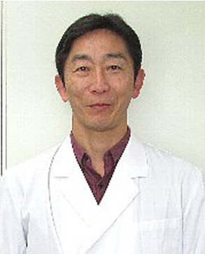
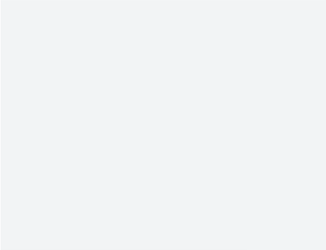
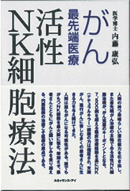
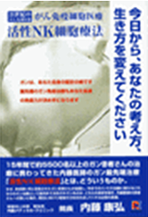
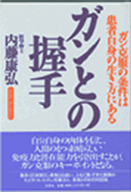

医師紹介
医師紹介
Doctor referral
当院の医師の紹介です。
- 院長 亀井智貴
- 非常勤医師 西山智広
- 非常勤医師 三好得司
- 顧問 内藤康弘
院長 亀井智貴

- ■所属
- 産業医
- ■略歴
-
１９８９年 福岡大学医学部 卒業
２００１年 名古屋大学大学院外科学博士課程
２０２２年 名古屋メディカルクリニック所属
非常勤医師 西山智弘
- ■所属
- 日本形成外科学会認定医
- ■略歴
-
１９８８年 藤田学園保健衛生大学医学部 卒業
１９９６年 慶應義塾大学伊勢慶應病院形成外科診療部長
１９９７年 にしやま形成外科を開設
１９９９年 にしやま形成外科皮フ科クリニックに名称変更
２００２年 医療法人桃姫メディカルを設立
簡単な挨拶文が入ります
紹介文が入ります。紹介文が入ります。紹介文が入ります。紹介文が入ります。紹介文が入ります。紹介文が入ります。紹介文が入ります。紹介文が入ります。紹介文が入ります。紹介文が入ります。紹介文が入ります。紹介文が入ります。
非常勤医師 三好得司
- ■所属
-
日本産婦人科学会専門医／母体保護法指定医師
ダイビングインストラクター（BSAC・NAUI）
- ■略歴
-
１９７７年 東邦大学医学部 卒業
１９７７年 近畿大学付属病院
１９８６年 特定医療法人 一祐会藤本病院産婦人科部長
１９９５年 三好産婦人科 継承
２００７年 活性NK細胞の研究及び治療開始
- ■専門とする疾患
-
更年期、老年期医療／プラセンタ療法／悪性腫瘍診断／
ガン遺伝子検査／ガン免疫ドッグ／
ガン免疫療法（活性ＮＫ細胞療法・その他）
一般不妊治療／皮フ疾患（にきび、魚の目、アトピー肌）
簡単な挨拶文が入ります
紹介文が入ります。紹介文が入ります。紹介文が入ります。紹介文が入ります。紹介文が入ります。紹介文が入ります。紹介文が入ります。紹介文が入ります。紹介文が入ります。紹介文が入ります。紹介文が入ります。紹介文が入ります。
顧問 内藤康弘（前理事長）

- ■書籍
-

・がんに克つ（幻冬舎メディアコンサルティング）
-

・がん最先端医療
活性ＮＫ細胞療法 -

・ガンとの握手（文芸社）
-

・２１世紀のがん先端医療
がん免疫細胞医療 活性ＮＫ細胞療法
今日から、あなたの考え方、生き方を変えてください
簡単な挨拶文が入ります
紹介文が入ります。紹介文が入ります。紹介文が入ります。紹介文が入ります。紹介文が入ります。紹介文が入ります。紹介文が入ります。紹介文が入ります。紹介文が入ります。紹介文が入ります。紹介文が入ります。紹介文が入ります。